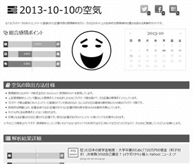
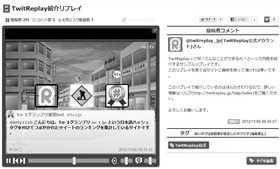
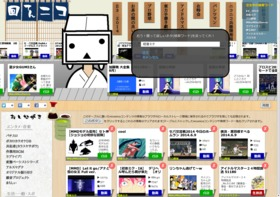
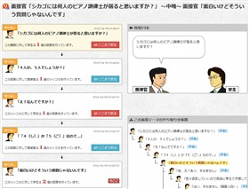
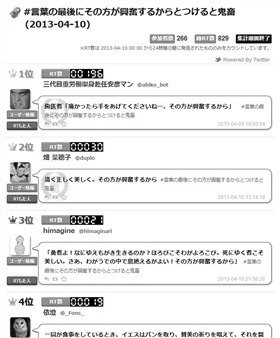
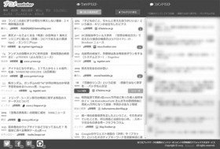
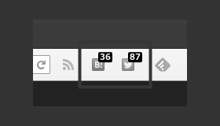

ktty1220
About Me
個人でWebサービスをいくつか運営しています。Webサービスの運営で飯を食べていけるよう修行中です。（達成度0.5%)
Services


Skill
- Node.js
- JavaScript(ES5, ES6, jQuery)
- TypeScript
- CoffeeScript
- HTML5
- CSS3
- PHP(CakePHP)
- Lua
- Perl
- MySQL
- PostgreSQL
- SQLite3
- MongoDB
- Redis
- Apache
- Nginx
- C/C++
- Android App
- Linux(ubuntu, CentOS)
- Heroku
- OpenShift
Contact
Development
Products
 美女徹底分析
美女徹底分析
【Mashup Awards 9 株式会社ドワンゴ賞 受賞作品】ランダムに表示された美女画像から好みの美女に関する関連情報を見ることができるWEBサービスです。(2016-12-30にサービスを終了しました)

 今日の空気
今日の空気
【Mashup Awards 9 メタデータ株式会社賞 受賞作品】はてなブックマークのホットエントリーに登録された記事内容の感情解析を行い、その日のネット上の全体的な感情傾向の算出を試みる実験的サイトです。(2015-11-08にサービスを終了しました)
 Kampa! DE プレゼン
Kampa! DE プレゼン
【Mashup Awards 9 デザインエッグ株式会社賞 受賞作品】Kampa!に登録した商品のカンパ募集をアピールするプレゼンスライドを作成できるWEBサービスです。(2015-11-08にサービスを終了しました)

 TwitReplay
TwitReplay
Twitterでつぶやかれたツイートをまとめて、ノベルゲームのような動きのある動画形式で再生できる「リプレイ」を作成し、投稿・閲覧できるWEBサービスです(2014-08-31にサービスを終了しました)。

 回転ニコ
回転ニコ
【HTML5 Japan Cup 2014 応募作品】指定した単語でniconicoサービス全体を検索して、該当するコンテンツを仕入れて回転寿司のようにレーンに流していくWEBサービスです。(2016-12-30にサービスを終了しました)

 トンデモ面接風Q&A
トンデモ面接風Q&A
日頃思っている素朴な疑問を面接官と学生に扮して自由にやり取りできる登録不要のQ&Aサイトです(2015-03-28にサービスを終了しました)。

 To-1グランプリ
To-1グランプリ
Twitterの日本語ハッシュタグで寄せらせた人気のお題に対するツイートとユーザーのランキングをデイリーで集計しているサイトです。(2019-02-28にサービスを終了しました)

 ブコメwatcher
ブコメwatcher
はてなブックマークの複数のエントリーのコメントを同時進行でウォッチできるサービスです。ソースはGitHubで公開しています。(2019-02-28にサービスを終了しました)
 Articlip
Articlip
ブログやニュースの記事部分だけを抽出して簡易ブラウザで軽快にサクサク閲覧することができるAndroid用RSSリーダーアプリです。(2018-10-01に公開を終了しました)

 mini SocialButton
mini SocialButton
ツールバーにソーシャルカウントを表示するボタンを設置します。ボタンを押すとコメント一覧ページを別タブで開きます。(2018-10-01に公開を終了しました)